Aktiviere deine innere
Schöpferkraft
Eine außergewöhnliche Reise in die Tiefe deines Bewusstseins.
Für Unternehmerinnen, die bereit sind,
ihr volles Potential zu entfalten und
ihr Business aus ihrer innersten Wahrheit heraus zu führen.
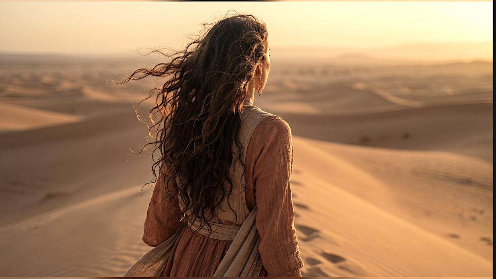
Wie lange willst du noch für alles stark sein –
obwohl du innerlich längst erschöpft bist?
Du spürst
tief in dir, dass es so wie bisher
nicht weitergehen kann.
Du gibst
jeden Tag alles – und fragst dich trotzdem, wofür.
Du funktionierst
doch innerlich fühlst du dich leer
und nicht mehr mit dir selbst verbunden.
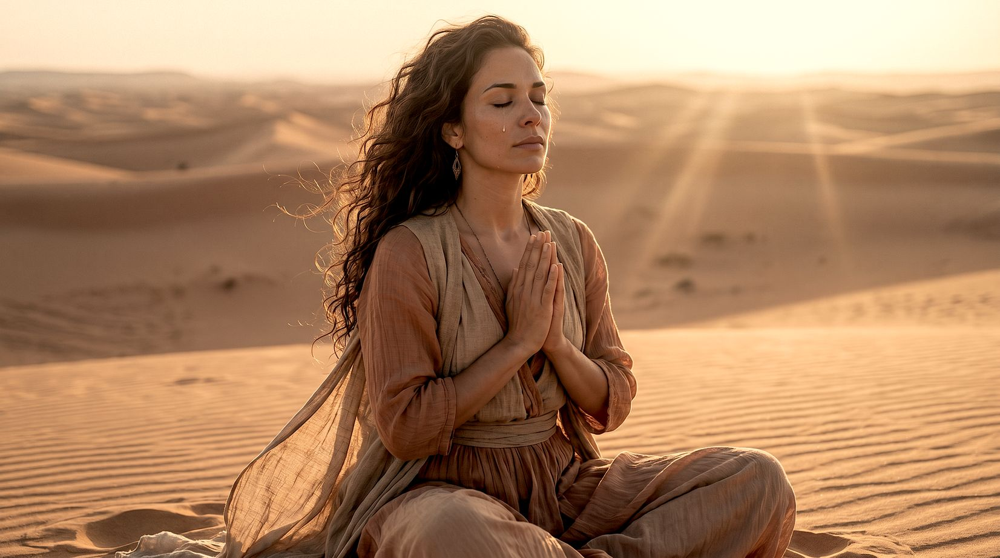
Was wäre, wenn dein größtes Problem
nicht dein Business ist –
sondern die Frau, die du aus Pflichtgefühl,
Verantwortung und Erwartungen
heraus geworden bist?
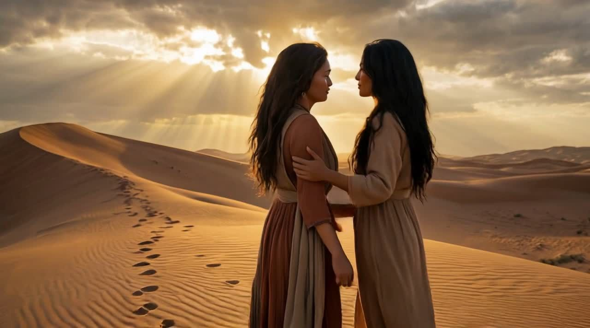
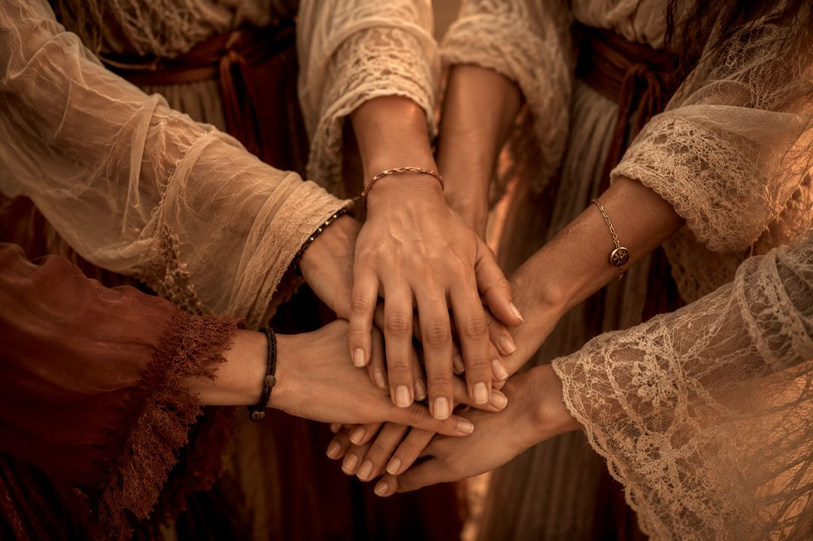
Du hast viel erreicht
trotzdem fühlt sich dein Leben nicht so erfüllt an.
Du triffst Entscheidungen
und dennoch zweifelst du immer häufiger an dir selbst
und deiner inneren Stimme.
Du musst diesen Weg nicht alleine gehen –
Gemeinsam hinterlassen wir Spuren, die bleiben.
Es gibt Momente im Leben einer Unternehmerin, in denen keine Strategie der Welt die Antworten geben kann. Momente, in denen es nicht um mehr Wissen geht, sondern um einen geschützten Raum, in dem du wieder lernst, dir selbst zuzuhören. Ein Raum, in dem deine tiefsten Herzenswünsche, die viel zu lange im Hintergrund standen, wieder gehört werden – und dein Leben und dein Business mit ihnen in Einklang kommen.
Der Founder Circle ist genau dieser Raum.
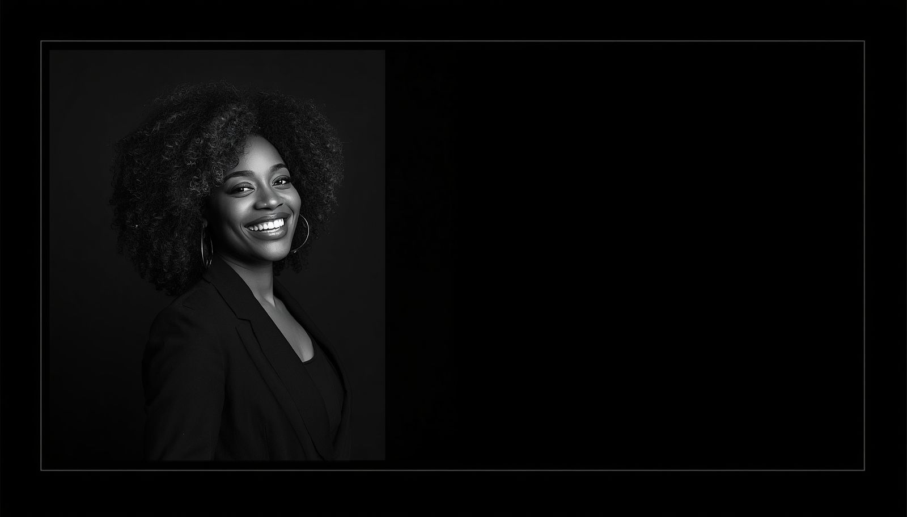

Founder Circle – 1:1 VIP Mentoring
Eine exklusive sechsmonatige Begleitung für Unternehmerinnen, die bereit sind, sich selbst mit neuer Tiefe zu begegnen und ein Business zu führen, das ihrer innersten Wahrheit Ausdruck verleiht.
Was dich erwartet
- 6 Monate exklusive VIP 1:1 Begleitung mit Carmen Zion
- Exklusiv für nur 6 Unternehmerinnen
- Über 30 Jahre internationale Unternehmererfahrung – persönlich an deiner Seite
- Individuelle und tiefe Begleitung durch Carmen Zion
- Ein geschützter Raum für echte Klarheit, tiefe Reflexion und eine ehrliche Begegnung mit dir selbst
- Bewusste Führung, innere Souveränität und neue Perspektiven für dein Traumleben und dein Business
- Ein Raum, um Herzenswünsche mit deinem Business in Einklang zu bringen
Bewusste Führung auf Augenhöhe
Du musst nicht länger alle Antworten allein finden. Im Founder Circle entsteht ein geschützter Raum, in dem wir gemeinsam auf Augenhöhe reflektieren, Klarheit gewinnen und Entscheidungen entwickeln, die mit deinen Werten, deiner Vision und deiner inneren Ausrichtung im Einklang stehen.
Nicht aus Druck oder Kontrolle –
sondern aus Bewusstsein, Vertrauen und innerer Stärke.
Denn die wichtigste Entscheidung, die du als Unternehmerin triffst,
ist die Entscheidung, dir selbst wieder zu vertrauen.
Wenn du spürst, dass der Founder Circle der richtige nächste Schritt für dich ist,
lade ich dich zu einem persönlichen 60-minütigen Deep Dive Call ein.
In diesem Gespräch lernen wir uns kennen, reflektieren deine aktuelle Situation und finden gemeinsam
heraus, ob der Founder Circle der richtige Raum für deine nächste Entwicklungsphase ist.
Die geballte Urkraft
Der Elemente
Für Unternehmerinnen, die bereit sind,
sich selbst auf einer tiefen Ebene zu begegnen.
The 4 Gateways of Human Consciousness
Jedes Element trägt eine uralte Weisheit in sich. Gemeinsam bilden die 4 Gateways das Fundament von Rise of the Phoenix und den Ausgangspunkt deiner Reise. Sie eröffnen dir neue Perspektiven auf dich selbst, deine Führung und dein Leben.
Jedes Element öffnet ein neues Tor zu deinem Bewusstsein und lädt dich ein, dir selbst auf einer tieferen Ebene zu begegnen. Schritt für Schritt gewinnst du mehr Klarheit über deine innere Ausrichtung – und schaffst die Grundlage, dein Business bewusst aus deiner innersten Wahrheit heraus zu führen.
Fühle
Löse, was dich zurückhält
Tauche ein in deine Emotionen
Finde in deine wahre Essenz
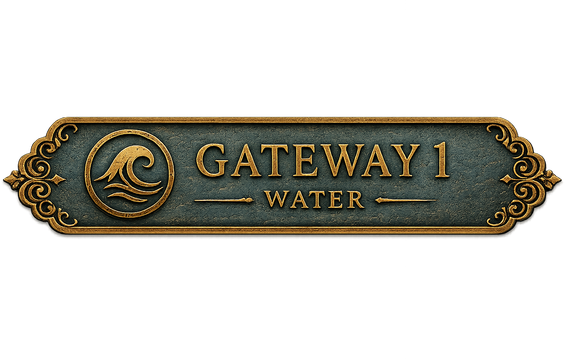
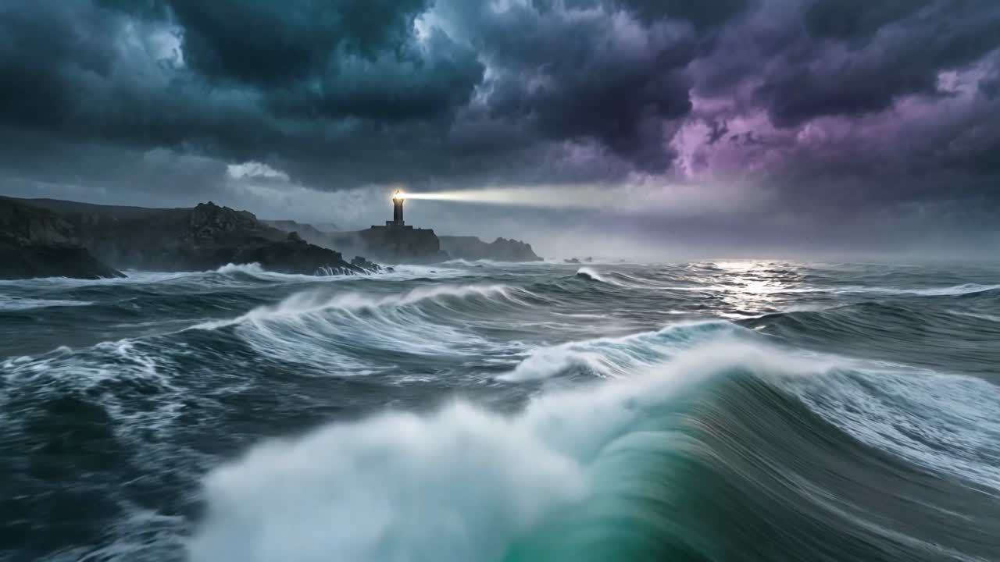
Handle
Entfalte deine innere Kraft
Verwandle Angst in Mut
Entzünde deine Vision
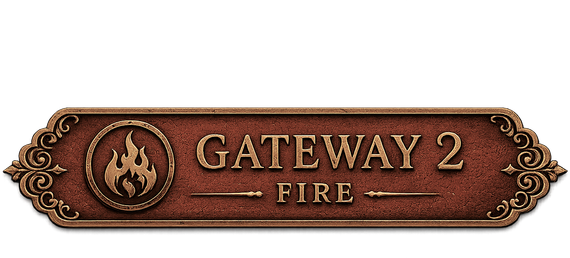
Wird nach Abschluss von Gateway 1 freigeschaltet
Erkenne
Erhebe dich über alte Gedanken
Gewinne Klarheit
Öffne neue Perspektiven
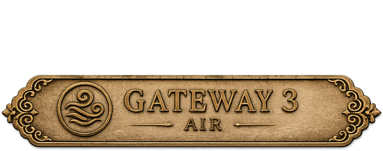
Wird nach Abschluss von Gateway 2 freigeschaltet
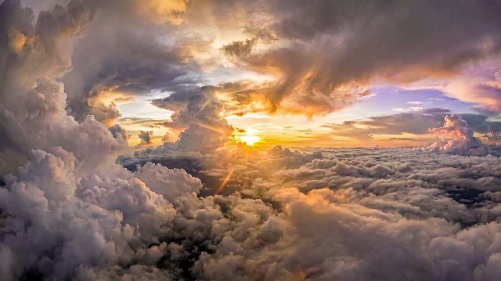
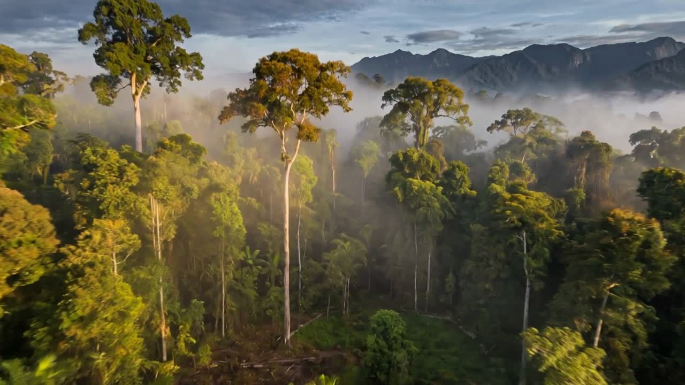
Verankere
Baue ein solides Fundament
Heile deine Wurzeln
Baue dein Vermächtnis
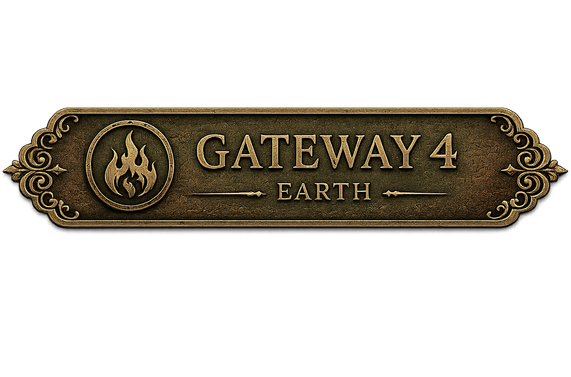
Wird nach Abschluss von Gateway 3 freigeschaltet
Deine Reise beginnt mit Gateway 1 –
Im Zeichen des Sturms
Erst nach dem erfolgreichen Abschluss dieses ersten Gateways werden die weiteren Gateways freigeschaltet. So baut jede Bewusstseinsreise auf der vorherigen auf und führt dich Schritt für Schritt tiefer in die Phoenix Philosophy.
The World of the Phoenix
Manche Reisen verändern
dein Business.
Diese Reise verändert
die Frau, die es führt.
Rise of the Phoenix
ist ein Signature-Programm
für Unternehmerinnen, die bereit sind,
ihre nächste Entwicklungsstufe bewusst zu gestalten.
Exklusiv · nur 60 Plätze in 2027 · limitiert
Programm-Voraussetzung:
Abschluss der 4 Gateways mit Zertifikat

Die Türen sind noch geschlossen.
Sie öffnen sich 2027 – für 60 Frauen.